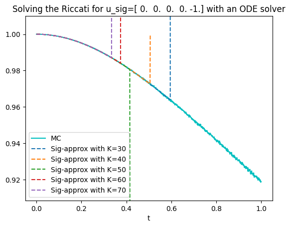

T=1 # [0,T] time horizon
#u in terms of the sig lift
K_u=5
u_sig=np.zeros(K_u, dtype=complex)
u_sig[2]=-2
#u in terms of the powers lift
u_pow=u_sig.copy()
for k in range(0,K_u):
u_pow[k]=u_pow[k]/math.factorial(k)Laplace transform in the Brownian setting
We present here few implementations of the Riccati ODE for the representations of the Laplace transform of the signature of a one dimensional Brownian motion.
The Riccati operator
Recall that \(R\) is the operator mapping the coefficients of \(f\) to the coefficients of \[\mathcal R f=\frac 1 2 (f''(x)+f'(x)^2).\]
The signature’s representaiton
In terms of signture it is given by \[ R(u)_k = \frac{1}{2} \big(u_{k+2} + \sum_{i+j=k}\binom k i u_{i+1}u_{j+1}\big). \] Since implementing an infinitely long sequence is not possibile, we also introduce a truncation’s parameter \(K\). We then set \(R(u)_k=0\) for each \(k\geq K\).
R_BM_sig
R_BM_sig (u, K)
The power sequence representaiton
In terms of power sequence the operator \(R\) is given by \[ R(u)_k = \frac{1}{2} \big((k+1)(k+2)u_{k+2} + \sum_{i+j=k}(i+1)(j+1) u_{i+1}u_{j+1}\big). \] Since implementing an infinitely long sequence is not possibile, we also introduce a truncation’s parameter \(K\). We then set \(R(u)_k=0\) for each \(k\geq K\).
R_BM_pow
R_BM_pow (u, K)
The corresponding ODEs
We are now investigating the following differential equations \[\begin{align*} \frac{d}{dt} \psi^{sig}(t) &= R^{sig}(\psi^{sig}(t)),& \psi^{sig}(0)&=u^{sig},\\ \frac{d}{dt} \psi^{pow}(t) &= R^{pow}(\psi^{pow}(t)),& \psi^{pow}(0)&=u^{pow}. \end{align*}\] In order to resource to a standard solver (for real valued initial conditions) we need the following auxiliary functions.
model_sig
model_sig (psi, t, K)
model_pow
model_pow (psi, t, K)
We are now ready to define the function providing the solution of the Riccati equations given the initial condition and the other needed parameters.
riccati_sol_sig
riccati_sol_sig (u_sig, timegrid, K)
Sig lift
riccati_sol_pow
riccati_sol_pow (u_pow, timegrid, K)
Pow lift
The affine transform formula
Finally, we can use the affine transform formula to obtain an approximation of \[\mathbb E[\exp(\langle \mathbf u,\mathbb X_t\rangle)]=\mathbb E[\exp(\sum_{k=0}^\infty \mathbf u^{sig}_k \frac{X_t^k}{k!})]=\mathbb E[\exp(\sum_{k=0}^\infty \mathbf u^{pow}_k X_t^k)]\] for each \(t\in[0,T]\). It is given by \[\mathbb E[\exp(\sum_{k=0}^\infty \mathbf u^{sig}_k \frac{X_t^k}{k!})]=\exp(\psi^{sig}(t)_0)\qquad\text{and}\qquad\mathbb E[\exp(\sum_{k=0}^\infty \mathbf u^{pow}_k \frac{X_t^k}{k!})]=\exp(\psi^{pow}(t)_0),\] respectively.
appr_exp_sig
appr_exp_sig (u_sig, timegrid, K)
Sig lift
appr_exp_pow
appr_exp_pow (u_pow, timegrid, K)
Pow lift
Numerical experiments
We now implement the theory to approximate \(\mathbb E[\exp(\langle \mathbf u,\mathbb X_t\rangle)]\) for every \(t\in[0,T]\).
Monte Carlo
The next function provides reference values for our target. Observe that coefficients need to be inserted in their signature representation.
MC
MC (u_sig, T, n_MC, N)
We may need to use the following function for change of discretization’s grid.
CoD
CoD (old_vector, n_old, n_new)
A first example
As a first test we compute \[\mathbb E[\exp(-2\frac{X_t^2}2)]=\mathbb E[\exp(-X_t^2)]\] for each \(t\in[0,1]\). The corresponding parameters are given in the following cell.
We then compute the target values using Monte Carlo.
N=100000 # number of samples
n_MC=1000 # number of times ticks
MonteCarlo = MC(u_sig,T,n_MC,N)We set the time grid and the truncation level.
n_time=1000 # number of times ticks for the plot
timegrid = np.linspace(0,T,n_time)
K=30And plot the results.
#Monte Carlo
MonteCarlo_CoD = CoD(np.real(MonteCarlo),n_MC, n_time)
plt.plot(timegrid,MonteCarlo_CoD,'c',label='MC');
#Sig Lift
plt.plot(timegrid,appr_exp_sig(u_sig,timegrid,K),'m--',label='Sig');
#Pow Lift
plt.plot(timegrid,appr_exp_pow(u_pow,timegrid,K),'g:',label='Pow');
plt.ylim(min(MonteCarlo.real-0.01),max(MonteCarlo.real)+0.01)
plt.xlabel("t")
plt.title(f'Solving the Riccati for u_sig={u_sig.real} with an ODE solver')
plt.legend();#Sig Lift
plt.plot(timegrid,appr_exp_sig(u_sig,timegrid,K)-MonteCarlo_CoD,'m--',label='Sig');
#Pow Lift
plt.plot(timegrid,appr_exp_pow(u_pow,timegrid,K)-MonteCarlo_CoD,'g:',label='Pow');
plt.xlabel("t")
plt.title(f'Error for u_sig={u_sig.real}')
plt.legend();A second example
As a first test we compute \[\mathbb E[\exp(-\exp{X_t})]=\mathbb E[\exp(\sum_{k=0}^\infty-\frac{X_t^k}{k!})]=\mathbb E[\exp(\sum_{k=0}^\infty-\frac1{k!}{X_t^k})]\] for each \(t\in[0,1]\). The corresponding parameters are given in the following cell.
T=1 # [0,T] time horizon
#u in terms of the sig lift
K_u=20
u_sig=-np.ones(K_u, dtype=complex)
#u in terms of the powers lift
u_pow=u_sig.copy()
for k in range(0,K_u):
u_pow[k]=u_pow[k]/math.factorial(k)We then compute the target values using Monte Carlo. In order to avoid unnecessary errors we introduce an ad-hoc function.
def MC_exp(u_sig,T,n_MC,N):
tt=0
Lap = np.zeros(n_MC, dtype=complex)
for i in tqdm(range(n_MC)):
B_run= np.zeros((1,N))
B_run=np.random.normal(0,np.sqrt(tt), (1,N))
Lap[i]=np.mean(np.exp(-np.exp(B_run)))
tt+=T/n_MC
return LapN=1000000 # number of samples
n_MC=600 # number of times ticks
MonteCarlo = MC_exp(u_sig,T,n_MC,N)We set the time grid and the truncation level.
n_time=1000 # number of times ticks for the plot
timegrid = np.linspace(0,T,n_time)
K=K_uAnd plot the results.
#Monte Carlo
MonteCarlo_CoD = CoD(np.real(MonteCarlo),n_MC, n_time)
plt.plot(timegrid,MonteCarlo_CoD,'c',label='Monte Carlo');
#Pow Lift
plt.plot(timegrid,appr_exp_pow(u_pow,timegrid,K),'b--',label='Pow-approximation');
#Sig Lift
plt.plot(timegrid,appr_exp_sig(u_sig,timegrid,K),'m:',label='Sig-approximation');
plt.ylim(min(MonteCarlo.real-0.001),max(MonteCarlo.real)+0.001)
plt.xlabel("t")
plt.ylabel("E[exp(-exp(X_t))]")
plt.title(f'Solving the Riccati for u_sig={u_sig.real} with an ODE solver')
plt.legend();#Sig Lift
plt.plot(timegrid,appr_exp_sig(u_sig,timegrid,K)-MonteCarlo_CoD,'m--',label='Sig');
#Pow Lift
plt.plot(timegrid,appr_exp_pow(u_pow,timegrid,K)-MonteCarlo_CoD,'g:',label='Pow');
plt.xlabel("t")
plt.title(f'Error for u_sig={u_sig.real}')
plt.legend();A third example
As a first test we compute \[\mathbb E[\exp(-\frac{X_t^4}{4!})]\] for each \(t\in[0,1]\). For this example we stick to the sig lift. The corresponding parameters are given in the following cell.
T=1 # [0,T] time horizon
#u in terms of the sig lift
K_u=5
u_sig=np.zeros(K_u, dtype=complex)
u_sig[4]=-1We then compute the target values using Monte Carlo.
N=100000 # number of samples
n_MC=1000 # number of times ticks
MonteCarlo = MC(u_sig,T,n_MC,N)We set the time grid and a range of truncation levels.
n_time=1000 # number of times ticks for the plot
timegrid = np.linspace(0,T,n_time)
K0=30 #initial value for K
K=K0
DK=10 #increments of K
n_K=5 #number of KWe set several truncation levels and compute the corresponding approximations.
appr_exp_siglist=[]
for i in tqdm(range(n_K)):
#Sig lift
appr_exp_siglist += [appr_exp_sig(u_sig,timegrid,K),]
K+=DKindices=[]
for k in range(n_K):
delta=appr_exp_siglist[k][1:]-appr_exp_siglist[k][:-1]
delta=delta[:len(appr_exp_siglist[k])-1]
#Cutting after the explosion
cond1=np.where(delta>0.01)[0]
cond2=np.where(delta<-0.01)[0]
index=len(appr_exp_siglist[k])-1
if len(cond1)>0:
index=cond1[0]
if len(cond2)>0:
index=min(index,cond2[0])
indices+=[index+2,]And plot the results for different \(K\).
#Monte Carlo
MonteCarlo_CoD = CoD(np.real(MonteCarlo),n_MC, n_time)
plt.plot(timegrid,MonteCarlo_CoD,'c',label='MC');
for i in range(n_K):
K=K0+i*DK
#Sig Lift
plt.plot(timegrid[:indices[i]],np.minimum(appr_exp_siglist[i][:indices[i]],max(MonteCarlo.real)+10*np.ones(indices[i])),'--',label=f'Sig-approx with K={K}');
plt.ylim(min(MonteCarlo.real-0.01),max(MonteCarlo.real)+0.01)
plt.xlabel("t")
plt.title(f'Solving the Riccati for u_sig={u_sig.real} with an ODE solver')
plt.legend();
As one can see the proposed numerical method is not working for this example. Alternatively, we propose to use the transport equation.
Riccati-transport equation
We now illustrate how to resource to the transport equation to compute \[v(t,u):=\mathbb E\Big[\exp\Big(\sum_{k=0}^\infty u_k\frac {X_t^k}{k!}\Big)\Big].\] This method is appearing to be more stable than then more direct one presented above.
Recall that setting \[v(0,u)=\exp(u_0)\qquad\text{and}\qquad R(u)_k = \frac{1}{2} \big(u_{k+2} + \sum_{i+j=k}\binom k i u_{i+1}u_{j+1}\big),\] we obtain that \(v\) satisfies the transport equation \(\partial_t v(t,u)=\partial_u^{R(u)}v(t,u),\) where \[\partial_u^{R(u)}v(t,u)=\lim_{M\to\infty}M\Big(v(t,u+\frac {R(u)}M)-v(t,u)\Big).\]
Numerical scheme
Discretizing both derivatives we get \[(T/N)^{-1}\Big(v(t+\frac T N,u)-v(t,u)\Big) \approx \partial_t v(t,u) = \partial_u^{R(u)}v(t,u) \approx M\Big(v(t,u+\frac {R(u)}M)-v(t,u)\Big),\] which leads to \[\begin{align*} v(t,u) &\approx v(t-\frac T N,u)+ \frac{MT}N\Big(v(t-\frac T N,u+\frac {R(u)}M)-v(t-\frac T N,u)\Big)\\ &=\lambda(v(t-\frac T N,A_M(u))+ (1-\lambda)v(t-\frac T N,u), \end{align*}\] for \(\lambda:=MT/N\) and \(A_M(u):=u+{R(u)}/M\). Starting with \(t=Tn/N\) and repeating the procedure \(n\) times we thus obtain \[\begin{align*} v(Tn/N,u) &\approx\sum_{m=0}^n \binom n m(1-\lambda)^{n-m}\lambda^mv(0,A_M^{\circ m}(u))\\ &=\sum_{m=0}^n \binom n m(1-\lambda)^{n-m}\lambda^m \exp(A_M^{\circ m}(u)_0) . \end{align*}\]
Truncation: The only value of \(A_M(u)\) that matters for the result is the 0-th. Due to the form of \(R\), the only terms of \(u\) that enters in \(A_M(u)_0\) are \(u_0\) and \(u_2\). Since we need to apply \(A_M(u)\) at most \(N\) times, a truncation at level \(K\geq 2N\) will not affect the result. We thus fix \(K:=2N\).
A_M
A_M (M, u_sig, K)
vTu
vTu (u, T, N, M)
Back to our third example
As a first test we compute \[\mathbb E[\exp(-\frac{W_t^4}{4!})]\] for each \(t\in[0,1]\). For this example we stick to the sig lift. The corresponding parameters are given in the following cell.
T=1 # [0,T] time horizon
#u in terms of the sig lift
K_u=5
u_sig=np.zeros(K_u, dtype=complex)
u_sig[4]=-1We then compute the target values using Monte Carlo.
N=100000 # number of samples
n_MC=1000 # number of times ticks
MonteCarlo = MC(u_sig,T,n_MC,N)We set the time grid for Monte Carlo.
time_MC = np.linspace(0,T,n_MC)We are now ready to plot the result.
N=80#number of time's ticks
K=N*2 #truncation
M0=50
M=M0 #R(u)/M = increment for space derivative
n_k=4 #number of curves to plot
incr_M= 10 #increment of M from curve to curve
plt.plot(time_MC,MonteCarlo,'c',label='MC');
for l in tqdm(range(n_k)):
time_run = np.linspace(0,T,N)
space = vTu(u_sig.real,T,N,M)
#Cutting after the explosion
cond1=np.where(space>1.1)[0]
cond2=np.where(space<0.91)[0]
index=len(space)-1
if len(cond1)>0:
index=cond1[0]
if len(cond2)>0:
index=min(index,cond2[0])
space_toplot = space[:index+1]
plt.plot(time_run[:len(space_toplot)],space_toplot,'--',label=f'Sig-approx with M={M}');
M+=10
plt.ylim(0.9, 1.01)
plt.xlabel("t")
#plt.title(f'E[exp(<u_sig,X_t>)] for u={u_sig.real}')
plt.legend();